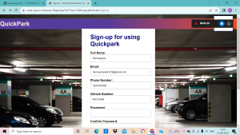
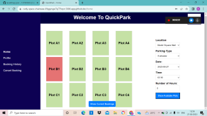
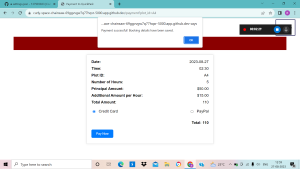
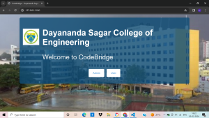
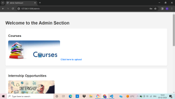
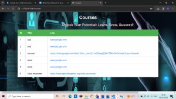
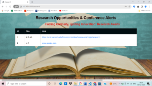

Greetings! I'm Hamsapriya B A, a dedicated and forward-thinking engineering student specializing in Computer Science and Engineering. Currently pursuing my degree at Dayananda Sagar College Of Engineering, Bangalore, I'm passionate about leveraging technology to solve real-world problems and drive innovation. Throughout my academic journey, I've immersed myself in a wide array of subjects, from data structures and algorithms to software engineering. I thrive on challenges and am constantly seeking opportunities to deepen my understanding and broaden my skill set. In addition to my coursework, I've been actively involved in various hands-on projects and extracurricular activities that have allowed me to apply theoretical concepts to practical scenarios. What sets me apart is my proactive approach to learning and my ability to adapt to new technologies and methodologies quickly. Whether it's coding in Java, Python, or C++, designing user interfaces, I'm always eager to expand my knowledge and tackle challenges head-on. As I prepare to transition from academics to the professional world, I'm excited about the prospect of leveraging my skills and expertise to make a meaningful impact in the tech industry. Whether it's developing innovative solutions, optimizing processes, or driving digital transformation, I'm committed to pushing the boundaries of what's possible.
QuickPark revolutionizes urban mobility with its innovative online parking reservation system, designed to address the challenges of parking and traffic management in bustling city centers. By providing a seamless platform for users to book parking spaces in advance and offering efficient traffic management solutions, QuickPark aims to enhance the overall urban mobility experience for both individuals and city administrators. Built on a robust technological foundation and incorporating advanced security measures, QuickPark represents a paradigm shift in how we approach parking and traffic optimization in urban environments.
QuickPark provides an intuitive platform for users to browse and reserve parking spots based on location, time, and preferences. Users enjoy a seamless booking process with personalized dashboard features and advanced search filters.
By encouraging advance parking reservations, QuickPark reduces congestion and optimizes traffic flow in urban areas. Users can plan their routes confidently, knowing their parking needs are prearranged, leading to smoother circulation and reduced frustration.
QuickPark offers city administrators a centralized dashboard to monitor parking infrastructure and analyze usage patterns. With real-time occupancy data and comprehensive analytics, administrators can make informed decisions to optimize parking resources effectively.
Built on a robust technology stack, QuickPark prioritizes scalability, performance, and security. Advanced encryption protocols ensure user data privacy, while predictive algorithms drive continuous improvement in traffic prediction and optimization.
  
The Learning Management System (LMS) project is a Flask-based web application designed for educational institutions to efficiently manage and distribute educational resources. With a focus on user accessibility and data security, the LMS allows users to upload various types of files securely, which are stored in a centralized database.
Key features include a user-friendly student portal that provides access to uploaded materials, facilitating seamless browsing, downloading, and interaction with course content. Additionally, the system promotes collaboration and communication among users through built-in tools such as messaging and discussion forums.
From a technical standpoint, the LMS leverages Flask's flexibility and scalability to handle user authentication, data management, and frontend-backend communication. Stringent security measures are implemented to safeguard sensitive information and prevent unauthorized access. Overall, the LMS project demonstrates proficiency in Flask web development, database management, and user interface design, offering educational institutions a comprehensive solution for managing and delivering educational content effectively.
   